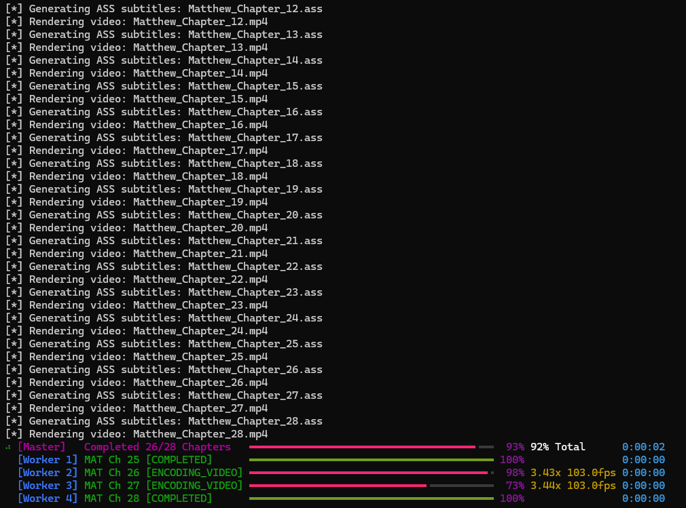
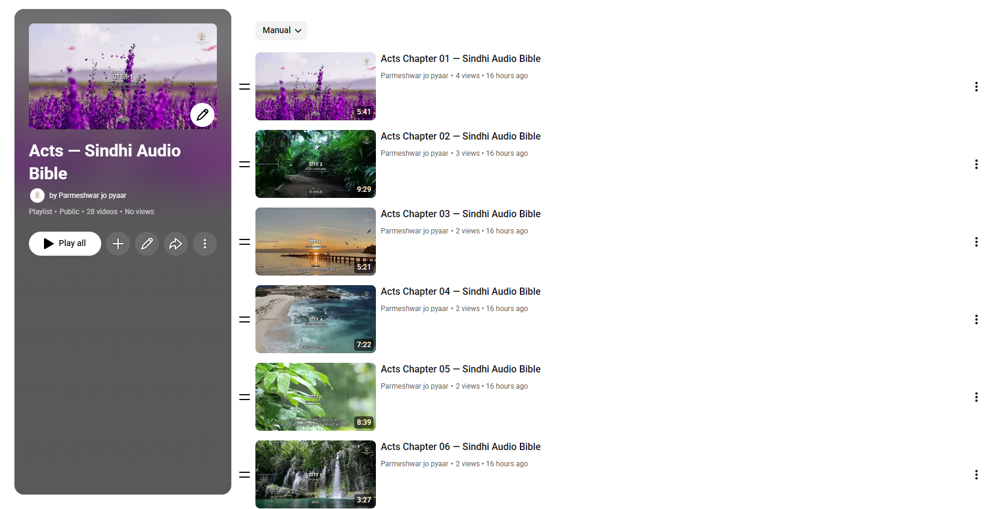

Vidx explainer
What VIDX does
VIDX turns your translated scripture text and its narration audio into a finished, subtitle-synced video ready to share on YouTube. If your team has built a Scripture App, VIDX reuses those exact files as they are.
You already did the hard part. If your team has built a Scripture App for your language, you've already done the hardest work there is: lining up the scripture text, word by word, with the recorded narration audio. VIDX doesn't redo any of that — it reuses it. Nothing gets re-recorded. Nothing gets re-aligned. Your team is one step away from a video you didn't know you could already make.
Who this is for
VIDX is for teams who have translated scripture text and a recorded narration of it. There are two ways in:
If your team has already built a Scripture App using Scripture App Builder, you are completely ready. Your app project already contains all three files VIDX needs, including the timing file. Nothing to prepare.
If you have the text and the audio but no Scripture App, you can still use VIDX. The one piece you'd be missing — the timing file that says when each verse is spoken — VIDX can now work out for itself, directly from your recording. See Don't have a timing file? below.
Building a Scripture App is still worth doing in its own right, and it's a separate step owned by the software department — reach out to them directly if your team wants one. But it is no longer something you must have before VIDX is useful to you.
What you already have
VIDX needs three things. If you built a Scripture App, all three came out of that work and VIDX reuses them exactly as they are — no new recording, no new alignment work, no new files to prepare:
| File | What it is |
|---|---|
| Scripture text | The translated words themselves |
| Narration audio | The recorded voice reading those words aloud |
| Timing file | Marks exactly when each verse or phrase is spoken. Created by Scripture App Builder — or, if you don't have one, generated by VIDX from your audio |
What you get
A finished video with your background of choice playing behind the narration, scripture text appearing on screen in sync with the voice, in your own language and script — and, if you'd like, your ministry's logo watermark and background music underneath. Complex scripts are fully supported and already in real, day-to-day use — languages using Devanagari, Malayalam, Thai, and Arabic-derived scripts have already had full books produced this way.


How it works, simply
- Bring your files — the scripture text, audio, and timing file from your Scripture App project. (No timing file? VIDX can generate it from your audio first — see below.)
- VIDX builds the video — automatically, chapter by chapter.
- You publish to YouTube — either by hand, or with VIDX's help.
That's the whole process. No video editing software, no manual subtitle work.
A note on speed: how fast step 2 happens depends on the computer doing the work. On a computer with a supported graphics card, VIDX can use it to build videos several times faster. Without one, VIDX still works exactly the same way — it just renders each chapter on the computer's processor instead, which takes noticeably longer per chapter. Either way produces the same finished video; a graphics card only changes how long the wait is.
Don't have a timing file? VIDX can make one
The timing file is the one piece that used to be genuinely hard to produce. It's the list that says verse 1 starts at 12 seconds, verse 2 at 23 seconds, and so on, all the way through the chapter. Marking that up by hand in an audio editor takes roughly an hour per chapter.
VIDX can now work it out on its own. You give it the scripture text and the audio, and it listens to the recording, follows along in the text, and writes the timing file for you — in about a minute per chapter.
This works in your language. It isn't limited to a short list of major languages. The speech model behind it covers more than 1,100 languages, and the text is converted to a common form before matching, so Devanagari, Malayalam, Arabic-derived, Thai and Latin scripts all work the same way. Full books have already been produced this way in Malayalam and Sindhi.
How close does it get? Measured against the timing files a real Scripture App project already had, across all 16 chapters of Mark in Malayalam — 662 verse boundaries in total — VIDX placed the typical verse within a sixth of a second of the existing timings. Nine in ten land within half a second, and 99.8% within one second. That is close enough to watch without noticing.
And you can correct it. Where a verse does need nudging, you don't need special software. A timing file can be opened directly in Audacity, the free audio editor many teams already use, where each verse appears as a labelled region under the waveform. Drag the boundary to where the voice actually starts, save, and hand it back to VIDX.
\begin{warningbox}
\textbf{One thing to check first.} Many recordings begin with a spoken
announcement --- ``The Gospel of Mark, chapter one'' --- before the first verse
starts. VIDX doesn't yet know to skip that, so verse 1 may land a second or so
late while the rest of the chapter is fine. It's a quick fix in Audacity, but
it's worth listening to the opening of your first chapter to see whether your
recordings do this.
\end{warningbox}
Step-by-step instructions are in the Timing File Guide that ships with VIDX
(docs/alignment_guide.md).
Publishing to YouTube
Once your chapters are rendered, you have two ways to get them onto YouTube. Neither is better than the other — pick whichever suits your team's internet connection and comfort level.
Option 1 — Let VIDX upload for them. VIDX can upload each chapter directly, set its thumbnail, and file it into the right playlist, unattended. This needs a one-time setup where someone creates a free "key" in Google's developer console so VIDX is allowed to speak to your channel on your behalf. It takes about fifteen minutes, once, and then never again.
Option 2 — Drag and drop by hand. VIDX can instead prepare a tidy folder per chapter containing the video, the thumbnail image, and a text file with the title and description already written for you. You then drag each video into YouTube Studio in your browser and paste the text across. No Google developer setup at all. This is often the right choice for teams on slower or metered connections.
Step 0: Install the YouTube Extra (don't skip this!)
Using the standalone
vidx.exe? Skip straight to Step 1. The uploading machinery and the timing aligner are both built into the executable, so there is nothing to install and no Python needed. This step is only for teams running VIDX from a Python installation.
The uploading machinery is an optional add-on, so it is not present in a plain Python VIDX install. Install it first:
(If you installed VIDX from a package rather than a clone of the repository, use pip install "vidx[youtube]" instead.)
Check it worked before going any further:
⚠️ This is the most common publishing setup failure. If you skip this step, everything in Steps 1–3 below will appear to go perfectly — you'll create your Google key and place the file correctly — and then
vidx --manifest ...will fail withNo module named 'google'. The Google Cloud setup and this Python install are two separate requirements, and the credentials file cannot fix a missing module.
Step 1: Create your Google Cloud Key
- Open your web browser and go to the Google Cloud Console. Sign in with your Google account.
- At the top of the page, click Select a project → New Project. Give it a simple name like
VIDX Scripture Uploaderand click Create. - In the left search bar or under APIs & Services > Library, search for "YouTube Data API v3" and click Enable.
- Go to APIs & Services > OAuth consent screen:
- Choose External and click Create.
- Type an App Name (e.g.,
VIDX Uploader) and select your email address for developer contact. - ⚠️ CRITICAL: On the Test users step, click "+ ADD USERS". Add your own email and the emails of any teammates who will upload videos. Google blocks any email not explicitly added to this list.
- Save and finish.
- Go to APIs & Services > Credentials:
- Click + CREATE CREDENTIALS → OAuth client ID.
- Select Desktop app and name it
VIDX Desktop. Click Create. - Click DOWNLOAD JSON to download your key file.
Step 2: Put Your Key File in Place
- Open File Explorer and navigate to your Windows home folder (usually
C:\Users\YourUsername\). - Create a new folder named
.vidx(with the period). - Copy the JSON file you downloaded and rename it to
client_secrets.json.
Step 3: Launch the Upload
Once your video batch has finished generating:
What happens next: 1. Your web browser pops up asking you to choose your Google account. 2. Select your whitelisted email address. 3. If Google shows a warning, don't panic — this is normal for private software. - Click Advanced. - Click "Go to VIDX Uploader (unsafe)". - Check the boxes and click Continue. 4. You'll see a success message. Check your terminal — VIDX is uploading!
💡 Daily Quota Tip: When VIDX uploads 5 or 6 chapters, Google's daily limit pauses the upload. VIDX saves its progress. Tomorrow, run the same command again and it resumes instantly!
Step 4: Choosing Which YouTube Channel You Upload To
There are two separate credentials:
| File | What it identifies | Where it lives |
|---|---|---|
client_secrets.json |
Your application — shared across all projects | ~/.vidx/client_secrets.json |
youtube_token.json |
The channel you logged into — decides where videos land | Next to your project's publish_manifest.json |
You never download a "channel credential." The channel is chosen by which account
you pick in the browser, and VIDX remembers that choice in youtube_token.json.
Publishing to a Brand Account
Most teams publish to a Brand Account (shared ministry channel). When the consent window opens:
- Sign in with the account that manages the channel.
- Google shows a list of channels that account can act for.
- Select the ministry channel — not your personal name.
Publishing to more than one channel
Every project keeps its own channel login:
output/matthew_sindhi/publish_manifest.json
output/matthew_sindhi/youtube_token.json ← Sindhi channel
output/mark_malayalam/publish_manifest.json
output/mark_malayalam/youtube_token.json ← Malayalam channel
I logged into the wrong channel — how do I switch?
Delete the token and run the publish command again:
Remove-Item output\matthew_sindhi\youtube_token.json
vidx --manifest output\matthew_sindhi\publish_manifest.json
Method 2: Easy Drag-and-Drop (No Google Setup Needed)
If team members don't want to set up Google Cloud keys, they can use the offline folders. In your project config:
publishing:
platform: "youtube"
enabled: false # Skip Google login
generate_offline_package: true # Create drag-and-drop folders
Run your normal batch command. When done, you'll see a YouTube_Upload_Package
folder with one subfolder per chapter. Each chapter folder has:
- The Video (
.mp4) - The Thumbnail (
title_card.jpg) - The Metadata (
metadata.txt) — pre-written title, description, tags
To publish: Open YouTube Studio → Create → Upload Videos → drag the .mp4 → copy-paste the metadata → upload the thumbnail → publish!
Common Publishing Issues
Q: I get No module named 'google' when running vidx --manifest
The youtube extra is not installed — see Step 0 above. Run pip install -e ".[youtube]".
If pip says "Requirement already satisfied" but the error persists, you have two Python installations and pip installed into the wrong one:
Q: Why did my upload fail with "Error 403: access_denied"?
The Google account you're signing in with is not on the Test Users list in Google Cloud Console. Go back to Step 1 and add that email address.
Q: If my computer restarts during upload, do I have to re-render everything?
No! Video generation and uploading are separate. VIDX uses resumable uploads, so it picks up from where it stopped.
Q: My videos uploaded to the wrong YouTube channel!
Delete the youtube_token.json file and run the publish command again — see Step 4 above.
What it takes to get set up
There's a one-time technical setup involved — getting VIDX installed and configured on a Windows computer. This isn't something your team needs to figure out alone: a Media Fellowship Team walks teams through this setup, start to finish.
Once it's set up, generating videos going forward is simple and repeatable.
What's next for VIDX
VIDX is actively being improved. A few things currently in progress:
- Making batch video generation smarter about picking up where it left off, instead of starting over.
- Making the YouTube upload process more reliable across multiple days of publishing.
- Automatically generating chapter markers and verse timestamps for YouTube, so viewers can jump straight to the part they want.
- General reliability polish across the tool.
These are in progress, not promises with a date attached — but they show VIDX is actively maintained and getting better.
How to start
If this sounds like something your team wants, register your interest on this session's form. That's all that's needed for now — you're only letting us know you'd like to explore this, nothing more.
Sending your actual project files is a separate, later step, handled through the proper channels once your interest is registered.
If your team wants help getting started, training and setup support are available — just let us know on the form.
Appendix: A Real Run, Unedited Numbers
Everything above is described in plain terms. This page is the opposite — the literal, unedited output from one real VIDX run, included so the results above can be checked rather than taken on faith. This is the Gospel of John, 21 chapters, rendered end to end on a single pass, using a GPU. Rendering the same chapters on a computer without a supported graphics card would take noticeably longer per chapter — VIDX's own documentation puts GPU rendering at roughly 3-10x faster than processor-only rendering, though that exact multiplier varies by computer, and no side-by-side CPU-only timing for this specific book has been measured.
| Chapter | Render Time | Result |
|---|---|---|
| 1 | 0:55.04 | Success |
| 2 | 0:34.01 | Success |
| 3 | 0:48.74 | Success |
| 4 | 0:57.13 | Success |
| 5 | 0:51.11 | Success |
| 6 | 1:07.10 | Success |
| 7 | 0:55.40 | Success |
| 8 | 0:58.49 | Success |
| 9 | 0:45.89 | Success |
| 10 | 0:51.00 | Success |
| 11 | 1:03.90 | Success |
| 12 | 1:10.00 | Success |
| 13 | 0:47.20 | Success |
| 14 | 0:43.99 | Success |
| 15 | 0:40.45 | Success |
| 16 | 0:47.50 | Success |
| 17 | 0:34.25 | Success |
| 18 | 0:58.27 | Success |
| 19 | 1:01.20 | Success |
| 20 | 0:39.94 | Success |
| 21 | 0:35.90 | Success |
Totals from this run: 21 of 21 chapters succeeded, 0 failed. Total time 17:46.6, averaging 0:50.79 per chapter. Every chapter listed above rendered successfully — nothing here has been rounded up, cherry-picked, or cleaned up beyond formatting the same numbers into a table.
Appendix: Installing VIDX (and FFmpeg)
This page is for whoever is doing the one-time technical setup — normally walked through directly by the Media Fellowship Team, included here for reference.
Step 1 — Get VIDX
Download the program directly:
This is a self-contained Windows program — no Python installation required to run it. Your project coordinator will also provide your project folder (scripture text, audio, timing files, and configuration).
Step 2 — Install FFmpeg (read this one carefully)
\begin{warningbox}
\textbf{This is the single most common setup failure.} VIDX relies on FFmpeg
to actually build the video, but does not include it inside \texttt{vidx.exe} ---
it's a real, separate install. Skipping this step, or forgetting to add
FFmpeg to your PATH, is the \#1 reason a first run fails.
\end{warningbox}
Install FFmpeg version 4.3 or newer using whichever of these your computer already has available — pick one:
| If you have... | Run this in PowerShell |
|---|---|
| Winget (built into Windows 10/11) | winget install -e --id Gyan.FFmpeg |
| Chocolatey | choco install ffmpeg |
| Scoop | irm get.scoop.sh \| iex (one-time, installs Scoop itself), then scoop install ffmpeg |
No package manager? Download it manually from the official page:
ffmpeg.org/download.html — under
Windows, choose the gyan.dev builds, download the "essentials"
build (ffmpeg-release-essentials.zip), and extract it anywhere on your
computer (e.g. C:\ffmpeg).
Step 3 — Add FFmpeg to your PATH (do not skip this)
If you installed with winget, Chocolatey, or Scoop, this is usually done for you automatically. If you downloaded manually, Windows still needs to be told where to find it:
- Open the Start Menu, type "environment variables", and open "Edit the system environment variables."
- Click the Environment Variables... button.
- Under "User variables," select Path, then click Edit....
- Click New, and paste the path to FFmpeg's
binfolder (the exact folder name depends on the version you downloaded), for example:
Step 4 — Verify it actually worked
Open a brand-new terminal window (PATH changes don't apply to terminals that were already open) and type:
You should see version details printed immediately. If you instead see
something like 'ffmpeg' is not recognized as an internal or external
command, FFmpeg is not correctly on your PATH — go back to Step 3.
Step 5 — Install your fonts
Whatever font your project's configuration specifies (e.g. Nirmala UI,
Mangal, Bailey) must already be installed on that same Windows computer
— otherwise scripture text renders as blank boxes instead of real
characters.
That's the entire one-time setup.
Appendix: Getting Started (First Run)
- Open your project folder in Windows File Explorer, click the address
bar, type
powershell(orcmd), and press Enter — this opens a terminal already inside your project folder. - (Optional) Open your project's
.yamlconfiguration file in Notepad to review fonts, colors, or background settings. Everything is normally already set up for you by your coordinator. - Run your video generator:
- Watch the live progress display while VIDX renders each chapter. When
it finishes, your videos are waiting in the
outputfolder, ready to view or publish.
If you need timing files first, generate them once per chapter before step 3, and they'll be saved into your project alongside the audio they describe:
VIDX never overwrites an existing timing file without asking first, so this is safe to re-run.
Appendix: Command Reference
VIDX is controlled with one program and a set of flags added after it. This
is every flag vidx.exe currently understands, in plain terms, for anyone
who wants to go beyond the default command.
Telling VIDX what to work on
| Flag | What it does |
|---|---|
-c, --config |
Path to a .yaml project configuration file — the normal way to run a full batch of chapters. |
--usfm |
Path to a single scripture text file (used instead of -c for a one-off, single-chapter run). |
--timing |
Path to that chapter's timing file. |
--audio |
Path to that chapter's narration audio file. |
-o, --output |
Where to save the finished video file. |
-b, --bg |
Path to a background video or image file. |
Controlling how it renders
| Flag | What it does |
|---|---|
-t, --duration |
Only render the first N seconds — useful for quickly previewing a style change without waiting for a full chapter. |
-w, --workers |
How many chapters to render at the same time (e.g. -w 4). Speeds up large batches. |
--gpu |
Turns on GPU hardware acceleration, if the computer has a supported graphics card. |
--codec |
Manually choose a specific video codec instead of letting VIDX pick automatically. |
--res, --resolution |
Override the output video's resolution (e.g. 1080x1920 for a vertical video). |
-y, --yes |
Automatically confirm any one-time prompts (like downscaling an oversized background video) instead of waiting for a keypress. |
Subtitle-only mode (no video rendering at all)
| Flag | What it does |
|---|---|
--generate-only |
Produce only subtitle files, skipping video rendering entirely. |
--format |
Which subtitle format to produce: ass, srt, or both. |
--keep-ass / --clean-ass |
Keep or delete the intermediate subtitle file VIDX creates while rendering. |
Generating timing files from audio
These are used instead of rendering — they produce a timing file, not a video.
| Flag | What it does |
|---|---|
--align |
Work out when each verse is spoken, from --usfm plus --audio, and write a timing file. |
--lang |
Your language's three-letter code (e.g. mal Malayalam, snd Sindhi, hin Hindi). Always worth including — it improves accuracy. |
--chapter |
Which chapter this is. Usually worked out from the audio filename, so rarely needed. |
--book |
The three-letter book code (e.g. MRK). Usually read from the scripture file. |
--level |
verse (default) for one timing per verse, or phrase to split verses at punctuation. |
--no-headings |
Use when your narrator does not read section headings aloud. |
--to-labels |
Save a timing file in a form Audacity can open, so boundaries can be dragged against the waveform. |
--from-labels |
Read your corrected boundaries back out of Audacity into the timing file. |
Publishing to YouTube
| Flag | What it does |
|---|---|
--publish |
After rendering, upload the finished videos to YouTube. |
--manifest |
Publish from a previously saved upload list, without re-rendering anything — this is also how an interrupted upload resumes the next day. |
General
| Flag | What it does |
|---|---|
-h, --help |
Show this same list from the command line. |
-v, --version |
Show which version of VIDX is installed. |
Appendix: Configuration File Reference
Every VIDX project has a .yaml "recipe" file controlling everything about
how the video looks and behaves. This appendix documents every key it
understands, followed by ready-to-copy sample configs. Most of these are
already set up correctly by whoever prepared your project — this is for
anyone who wants to understand or adjust the recipe file directly.
A config file has up to six top-level sections: project, video, audio,
style, jobs, and (for automated YouTube publishing) publishing.
project — project metadata
| Key | What it does | Example |
|---|---|---|
name |
Descriptive title, used in logs. | "Gospel of Mark Release" |
output_dir |
Folder where finished videos/subtitles are written. | "output/mark" |
generate_only |
If true, skips video rendering and only produces subtitle files. |
false |
subtitle_format |
Which subtitle format(s) to produce when generating subtitles. | "ass", "srt", or "both" |
video — the canvas and background
| Key | What it does | Example |
|---|---|---|
resolution |
Output video dimensions. 1920x1080 widescreen, 1080x1920 vertical/Shorts, 1080x1080 square. |
"1920x1080" |
fps |
Frames per second. | 24 |
codec |
Video encoder. | "libx264" (software) |
preset |
Encoding speed vs. compression tradeoff. | "fast" |
crf |
Quality level, lower = higher quality (0-51). | 23 |
background_media |
Path to the background video or image. | "src/backgrounds/loop.mp4" |
loop_background |
Repeats a short background clip to match audio length. | true |
scaling_mode |
How the background fits the canvas: pad (letterbox), crop (fill), or stretch. |
"crop" |
gpu |
Turns on GPU hardware encoding (same as CLI --gpu). |
true |
loop_crossfade_sec |
Smooths the seam when a background loop repeats. | 1.0 |
watermark |
Corner logo overlay — see sub-keys below. | (see below) |
title_card |
A still image shown before scripture narration starts. | "assets/title.jpg" |
title_duration |
How many seconds the title card displays. | 4.0 |
video.watermark sub-keys:
image— path to a transparent PNG.position—top-left,top-right,bottom-left, orbottom-right.margin— distance from the edge, in pixels.scale— size as a fraction of video width (e.g.0.15= 15%).opacity—0.0to1.0.
audio — narration, bumpers, and background music
| Key | What it does | Example |
|---|---|---|
codec |
Audio encoder. | "aac" |
bitrate |
Audio quality. | "192k" |
sample_rate |
Audio sample rate in Hz. | 48000 |
intro_clip |
An audio clip played before the narration starts. | "assets/intro.mp3" |
outro_clip |
An audio clip played after the narration ends. | "assets/outro.mp3" |
background_music |
A music track looped quietly under the narration. | "assets/bgm.mp3" |
background_music_volume |
Music volume, 0.0 to 1.0. |
0.15 |
fade_in_sec / fade_out_sec |
Smooth audio fade at the start/end. | 1.5 |
style — fonts, colors, and positioning
Three sub-sections control on-screen text: style.verse (the scripture
text itself), style.heading (section headings), and style.verse_number
(the small "1:1" reference marks).
| Key | What it does | Example |
|---|---|---|
font |
Font name — must be installed on the rendering computer. | "Nirmala UI" |
size |
Font size in points. | 48 |
color |
Text color, as a hex code. | "#FFFFFF" |
outline_color / outline_width |
Text border color and thickness. | "#000000", 3 |
shadow |
Drop shadow offset in pixels. | 1 |
alignment |
Position on screen, using a numpad layout (7-9 top row, 4-6 middle, 1-3 bottom; 5 = dead center). |
2 (bottom-center) |
margin_bottom / margin_lr / margin_vertical |
Distance from the screen edges. | 60 |
background_box |
Adds a semi-transparent box behind the text for readability. | true |
background_color / background_opacity |
Color and opacity of that readability box. | "#000000", 0.60 |
bold |
(heading only) Renders the heading in bold. | true |
show |
(verse_number only) Whether to display verse references at all. | true |
on_every_segment |
(verse_number only) Show the reference on every line, not just the first. | false |
Vertical video safety zone: apps like YouTube Shorts, Instagram Reels, and TikTok overlay their own buttons and captions along the bottom and right edges. On vertical (
1080x1920) videos, setmargin_bottom: 140(or higher) andmargin_lr: 45so scripture text never sits underneath the app's own interface.
style.overlay (optional title/subtitle/watermark text overlay):
enabled, title (auto-derives from book/chapter), title_color,
title_position, subtitle (custom text, e.g. "AUDIO BIBLE"),
subtitle_position, watermark_text, watermark_position,
watermark_opacity, divider_line (a line between title and subtitle).
Positions use the same numpad layout as alignment above.
jobs — the list of chapters to process
Each entry pairs one chapter's scripture text, timing file, and audio.
Because VIDX automatically finds the right chapter inside a book-level
.SFM file, every job in a whole-book batch can point at the same USFM
file — you don't need to split it per chapter.
| Key | What it does |
|---|---|
usfm |
Path to the scripture text file. |
timing |
Path to that chapter's timing file. |
audio |
Path to that chapter's narration audio. |
output |
Where to save the finished video. |
Per-job overrides — any of these, set inside a single job entry,
override the project-wide default just for that chapter: background,
background_music (or "none" to disable it for that chapter),
background_music_volume, duration (seconds, for quick previews),
keep_ass.
publishing — automated YouTube upload (optional)
Only needed if you're using VIDX's automated upload rather than the drag-and-drop method. Most fields already have sensible defaults.
| Key | What it does |
|---|---|
enabled |
Turns on automatic upload after rendering. |
client_secrets_file |
Path to your Google OAuth key file. |
privacy_status |
"private", "unlisted", or "public". |
playlist_name |
Playlist the videos get added to. |
title_template / description_template |
Text patterns for the video title/description, with placeholders like {book} and {chapter} filled in automatically. |
tags |
YouTube tags applied to every upload. |
Appendix: Sample Configuration Templates
Three ready-to-copy starting points, fully commented. Save any of these as
a .yaml file, update the file paths to match your own project, and run
it with vidx.exe -c yourfile.yaml.
Template 1 — Simplest possible single chapter
project:
# Shows up in logs, nothing else
name: "My First Chapter"
# Where the finished video is saved
output_dir: "output"
video:
# Standard widescreen (16:9)
resolution: "1920x1080"
# Your background video loop
background_media: "src/bg.mp4"
style:
verse:
# Must already be installed on this computer
font: "Nirmala UI"
# White scripture text
color: "#FFFFFF"
# Dark box behind the text for readability
background_box: true
jobs:
# Your scripture text file, that chapter's timing file, that chapter's
# narration audio, and the name of the finished video:
- usfm: "src/book.SFM"
timing: "src/chapter_01_timing.txt"
audio: "src/chapter_01.mp3"
output: "output/Chapter_01.mp4"
Template 2 — Vertical Shorts / Reels, with safe margins
project:
name: "Vertical Shorts Release"
output_dir: "output/shorts"
video:
# Vertical/portrait — Shorts, Reels, TikTok
resolution: "1080x1920"
# Fills the vertical frame (recommended for vertical)
scaling_mode: "crop"
background_media: "src/vertical_bg.mp4"
style:
verse:
font: "Bailey"
size: 48
color: "#FFFFFF"
# Clears TikTok/Reels/Shorts UI buttons at the bottom
margin_bottom: 140
# Narrower side margins for a vertical frame
margin_lr: 45
background_box: true
# Slightly darker box helps readability on mobile
background_opacity: 0.70
jobs:
- usfm: "src/book.SFM"
timing: "src/chapter_01_timing.txt"
audio: "src/chapter_01.mp3"
output: "output/shorts/Chapter_01_Vertical.mp4"
Template 3 — Whole-book batch, with music, bumpers, and a watermark
project:
name: "Gospel of Mark — Full Book"
output_dir: "output/mark_book"
video:
resolution: "1920x1080"
background_media: "src/bg.mp4"
# Shown before narration starts
title_card: "assets/title.jpg"
# For 4 seconds
title_duration: 4.0
watermark:
# Your ministry's logo (transparent PNG)
image: "assets/logo.png"
position: "top-right"
# 12% of the video's width
scale: 0.12
opacity: 0.80
audio:
# Plays before the narration
intro_clip: "assets/intro.mp3"
# Plays after the narration
outro_clip: "assets/outro.mp3"
# Quiet music under the narration
background_music: "assets/bgm.mp3"
# Kept low so it never competes with the voice
background_music_volume: 0.15
style:
verse:
font: "Nirmala UI"
color: "#FFFFFF"
background_box: true
background_opacity: 0.50
jobs:
# Every chapter points at the same book-level USFM file — VIDX finds
# the right chapter automatically from each timing file.
- usfm: "src/42MRKsnd.SFM"
timing: "src/timings/MRK_01_timing.txt"
audio: "src/audio/01.mp3"
output: "output/mark_book/Mark_01.mp4"
- usfm: "src/42MRKsnd.SFM"
timing: "src/timings/MRK_02_timing.txt"
audio: "src/audio/02.mp3"
output: "output/mark_book/Mark_02.mp4"
# ... continue the same pattern through the rest of the book ...
Run this one with multiple chapters rendering at once: